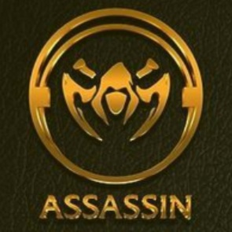
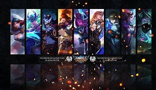

What are Assassins?

Assassins can be defined as those heroes that sneakily attack the backline and the enemies that get separated from their team. They are usually not team fight oriented since they often attack secretly, but they can still participate in the team fights by aiding in the team's damage output. More often than not, these assassins deal instantaneous burst damage to the enemies instead of slowly dealing damage to them. Later on, we will also discuss how assassins are played, but for now, let us focus on defining our friend Assassins.
An assassin is an agile hero that specializes in killing or disabling roaming targets picking them of as they try to replenish HP. Focused on infiltration, deception, and mobility, assassins are opportunistic hunters who find favorable moments within a fight before jumping into the fray. Regardless of the size of the enemy team, assassins specializes in positioning and artful killing. They strike when the time is right – no sooner, no later. Assassins are more suitable to be played by experienced players as they have low HP and high burst damage. They are ideal for taking out opponents easily, but are easier to be killed due to bad positioning and wrong timing.
Just like the other roles, let us classify them according to their Assassin role. There are those that are purely Assassins, and those that have their Assassin role either as their primary or secondary role.
Pure assassins are those that have no other roles besides their Assassin role. These pure assassins include Saber, Karina, Fanny, Hayabusa, Natalia, Lancelot, Helcurt, Gusion, Hanzo, Ling, Benedetta, Aamon, and Joy.
Those assassins that have the primary Assassin role include Yi Sun-Shin and Selena.
Lastly, those assassins that are mainly placed on other roles but are still given the Assassin role include Alucard, Zilong, Harley, Lesley, Kadita, and Mathilda.
Some assassins deal Physical damage to the enemies which means that they rely on Physical damage items to properly deal damage to the enemies. There are also some assassins that deal Magic damage, instead. This means that they would then need the Magic items such as Shadow Twinblades, an item that is most recommended for Magic assassins so that they can deal more damage and even slow to the enemy units that they target.
Going on to our next section, let us discuss what these assassins are usually up to during in-game matches.
What do Assassins do?

Due to the flexibility of the assassins, they are usually played for four different roles: the jungler, the mid laner, the roamer, and the gold laner. The gold laner is the lane where extra gold is given by eliminating the catapult minions in the minion waves that arrive in the first few minutes od the game. Without further ado, let us discuss why assassins can be played in these four roles.
Assassins are usually played as a jungler in most games that I encounter. This is because assassins generally have the proper skill set that allows them to make a proper rotation around the map through the jungle areas. When equipped with retribution, these assassins are generally capable of quickly eliminating the jungle creeps before other roles can. Clearing the jungle area on their team's side before the enemy will allow the jungler to invade the enemy's jungle to attempt to steal the gold and experience that the enemy jungler may get from them. Junglers are also the priority to safety during fights for the neutral objectives: Lord and Turtle. This is because they are equipped with the Retribution spell which will allow them to secure the neutral objectives with ease. These junglers are also needed to properly gank the side lanes to allow their team to have a favorable position in the Turtle or Lord fights. Later on in the game, they could give up some jungle buffs to their allies, specially their marksman, since the marksmen would need those buffs on the later stages of the game to deal more damage output to the enemies.
Some assassins are able to lane on the mid lane. Though this is not really the case for every assassin, there are some that are good to play in this lane. These assassins include Selena, Harley, Kadita, and Mathlida. As we can see, these are the junglers that have longer ranges just like the mages. This means that they are able to compete the mid lane with the mage of the enemy team, and will thus make them capable of playing in the mid lane.
Although this is kind of rare, there are also assassins that may be played as a roamer. These assassins are usually those with crowd control skills which will allow them to make a proper initiating set just like other roamers. Some notable assassin roamers include Natalia, Saber, Selena, and Kadita. Natalia, despite having no Crowd Control skill, is still a very good assassin roamer due to her capability to roam around the map without being seen by the enemies. She would then be able to pick up kills of enemies without disturbing the gold and experience that her allies are getting from their respective lanes.
Lastly, we have those assassins that can be played in the gold lane. This is very unusual since this mostly happens when two assassins were picked in a team, not a very ideal scenario (Yi Sun-Shin and Lesley are exceptions to this since they both have the primary Marksman role). However, there are still assassins that can deal with the long-ranged marksmen of the enemy team that they oppose in the gold lane, even in the early parts of the game. These assassins include Yi Sun-Shin, Lesley, Natalia, Karina, Lancelot, Hayabusa, and Fanny. The first two are proper marksmen that can be used in the mid lane to oppose the enemy marksman. However, the last three are not really that suitable for the lane, just like the other assassins, but they have skills that will at least help them in defending against those marksmen.
These assassins may be played on several roles, but remember that even though they can play those roles, it will always depend on the playstyle of the user. If the user is best to stay on the jungle, then it is best if the assassin that they are playing will play the jungler role. At the end, these assassins are relatively harder to play than some other roles, meaning that it would all depend on the players themselves.
Some Special Abilities of Certain Assassins
Darkness Befalls Everyone
Helcurt's 'Dark Night Falls' (Ultimate skill)
Passive: Helcurt permanently gains 10%-20% extra Attack Speed.
Active: Helcurt summons the night, reducing the vision range of all enemy heroes and depriving them of their sight of allies for 3.5 seconds. He also gains 10%-20% extra Attack Speed and 65%-75% Movement Speed for 8 seconds. During the night, the number of stingers stored won't drop. Dark Night Falls has no effect on enemy Helcurt.
Out-of-Body Experience!!
Hanzo's 'Kinjutsu: Pinnacle Ninja' (Ultimate skill)
Hanzo gains 25 Demon Blood and charges into battle as Demon Pneuma, gaining a new set of basic skills while leaving his body behind.
Demon Pneuma consumes 10 Demon Blood every second, and when it is depleted, Hanzo returns to his body's original position. While in Demon Pneuma form, it can move through terrains and has additional 35% Movement Speed and 30%-50% Attack Speed, but its Physical and Magic Defense are reduced by 50.0%-30.0%.
When Demon Pneuma is killed, it will be drawn back to Hanzo's body, stunning him for 3 seconds and weakening him for 8 seconds (slowed by 55%, Physical and Magic Defense reduced by 100% and location revealed); they are both killed if the body is destroyed.
Choice: Demon Pneuma returns to Hanzo's body immediately, or the other way around.
Reflect the Projectiles
Karina's 'Dance of Blades' (First skill)
Karina keeps flourishing her twin blades as she enters the Dance of Blades state for up to 3.5 seconds. In this state, she increases her Movement Speed by 45% and blocks all Basic Attack.png Basic Attacks, dealing 100-200 (+30% Total Magic Power) Magic Damage at the attacker (throwing a Shadowblade if hit by a ranged attack, or launching a spinning slash at melee attackers. This effect has a built-in cooldown of 0.4 seconds).
Karina's Basic Attacks and Shadow Assault.png Shadow Assault end Dance of Blades, but make her next Basic Attack deal 180-255 (+55% Total Magic Power) Magic Damage and inflict 45% slow effects for 1 second.
Invisibility!!
Natalia's 'Assassin Instinct' (Passive skill)
Natalia deals 15% additional damage when attacking from behind.
In the bush, Natalia will conceal herself and enter Stealthed State if she has not taken or dealt any damage in 2 seconds. Dealing damage, being detected or leaving the bush for 5 seconds will break the concealment.
Stealthed State increases her Movement Speed by 15% and enables her next Basic Attack.png Basic Attack to teleport to and backstab the target, dealing 250 (+120% Total Physical Attack) Physical Damage, slowing the enemy by 30% for 0.6 second and the enemy will be given a mark which would dissapear within 2 seconds, if the enemy receives 2 marks Natalia will be silencing the enemy for 1 second. When attacking a Turret in Stealthed State, Natalia will blink to the flank side of the Turret.
Natalia's Critical Damage is reduced by 60%.
Travel on Top of Walls
Ling's 'Finch Poise' (First Skill)
Passive: Ling's Critical Chance is permanently increased by 5%-17.5%.
Active: Ling casts his Lightness Skill, leaping onto the designated wall, entering half-stealth state, restoring Lightness Points more quickly and gaining 30% Movement Speed. If Ling receives damage, he will leave the half-stealth state. If he is controlled, he will fall onto the ground and be slowed by 30% for 2 seconds. When using this skill to jump from a wall to another, it will reset the Cooldown and refresh the half-stealth state.
Though there are more abilities of Assassin heroes worthy of being classified as unique and special, I am unable to cover them all in here. Hopefully, I would have some spare time in the future which would let me finish this work. Regardless, that is all about the assassins!!